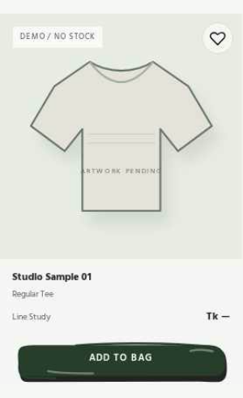
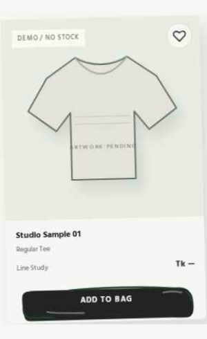
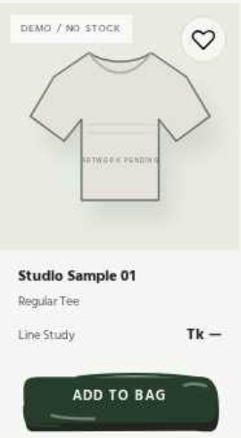
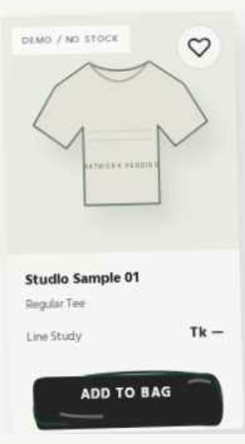
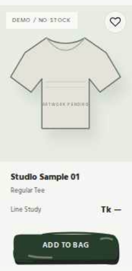
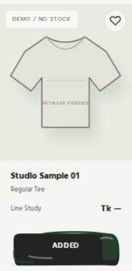

CHAPCHITRA / PR #35 / LIVE BROWSER EVIDENCE
SVG Button Typography — Integration QA
These are actual Chromium product-card captures from the corrected Shop page, not redesigned button mockups. They demonstrate centered single-line ADD TO BAG text with white contrast on the original Forest SVG silhouette.
Behavior: Desktop and tablet show the actual hover state, including the approved ±1.4° card tilt and ink wipe. Touch screens intentionally disable hover; mobile's second capture shows the tapped ADDED confirmation. The component artwork and shopping handlers are unchanged.
Desktop · 1440 × 900


Tablet · 820 × 1180


Mobile · 390 × 844


Measured alignment and contrast
| Property | Verified result |
|---|---|
| Horizontal alignment | Within 0.01px of SVG button center |
| Vertical alignment | 2px optical lift, within hand-drawn silhouette |
| White text | #FFFFFF on Forest and Terracotta |
| Beige text | #232323 in the default state |
| Wrapping | No wrap, full ADD TO BAG visible |
| Controls | Native button, demo bag increments and stays session-only |
This page is a screenshot review artifact. Use the linked Shop and isolated gallery for live motion, keyboard and cart behavior.